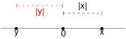
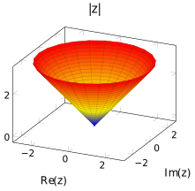

4 Module et conjugué
\[ \newcommand{\R}{\mathbb{R}} \newcommand{\Q}{\mathbb{Q}} \newcommand{\C}{\mathbb{C}} \newcommand{\N}{\mathbb{N}} \newcommand{\Z}{\mathbb{Z}} \newcommand{\zbar}{\overline{z}} \newcommand{\RE}{\textrm{Re}\,} \newcommand{\IM}{\textrm{Im}\,} \newcommand{\Arg}{\textrm{Arg}\,} \newcommand{\iu}{\textrm{i}} \newcommand{\eu}{\textrm{e}} \newcommand{\boitevide}{\square} \]
4.1 Le conjugué
Dans la section précédente, nous avons vu que le nombre \(a-b\,\iu\) était utile pour calculer l’inverse de \(a+b\,\iu\) ou encore un quotient de nombre complexe présentant le nombre \(a+b\,\iu\) au dénominateur. Ce nombre apparaît dans d’autres contextes et mérite d’être nommé convenablement.
Définition 4.1: Conjugué d’un nombre complexe
Trouver la forme cartésienne d’un nombre complexe exprimé sous la forme d’un quotient \(\frac{z}{w}\) revient donc à multiplier le numérateur et le dénominateur par le conjugué de \(w\).
Sur le plan géométrique, trouver le conjugué d’un nombre complexe consiste à en obtenir l’image par une réflexion selon l’axe réel. Ainsi, les points appartenant à l’axe réel sont égaux à leur conjugué. Cette propriété est en fait une caractérisation des nombres réels,; si un nombre complexe est égal à son conjugué, alors le nombre est réel. Cela peut aussi être obtenu facilement sur le plan algébrique au moyen de la suite d’équivalences ci-dessous : \[\begin{align*} \zbar=z&\iff a+b\,\iu=a-b\,\iu,\\ &\iff \begin{cases} a=a\\ b=-b, \end{cases}\\ &\iff b=-b,\\ &\iff b=0,\\ &\iff \IM z=0,\\ &\iff z\in\R. \end{align*}\]
Proposition 4.1
Preuve. Soit \(x,y\in\R\) tels que \(z=x+\iu\,y\). Un calcul direct nous montre que \[\frac{z+\overline{z}}{2}=x\qquad\frac{z-\overline{z}}{2\iu}=y.\] Comme \(x=\RE(z)\) et \(y=\IM(z)\), cela démontre la proposition.
4.1.1 Fonctions valeur absolue et racine carrée
Définition 4.2: Fonction valeur absolue
\[|x|=\begin{cases} x&\text{si $x\geq 0$,}\\ -x&\text{si $x< 0$.} \end{cases}\]

Définition 4.3: Fonction racine carrée
Proposition 4.2: Racine carrée et valeur absolue
Preuve. Si \(x\geq 0\), alors \(\sqrt{x^2}\) est l’unique nombre positif dont le carré est \(x^2\). Ce nombre est bien sûr \(x\) lui-même. Par conséquent, dans le cas où \(x\geq 0\), on a que \(\sqrt{x^2}=x\). Dans le cas ou \(x<0\), il suffit d’observer que \(-x>0\). Ainsi, comme \((-x)^2=x^2\), le nombre \(-x\) est alors un nombre positif dont le carré est \(x^2\). Par définition de \(\sqrt{x^2}\), on conclut que \(\sqrt{x^2}=-x\) si \(x<0\). En résumant ce que nous venons de faire, on constate que \[\sqrt{x^2}=\begin{cases} x&\text{si $x\geq 0$,}\\ -x&\text{si $x< 0$.} \end{cases}\] Comme la fonction valeur absolue de \(x\) est définie de cette manière, on a forcément que \(\sqrt{x^2}=|x|\) pour tout \(x\in\R\).
La fonction racine carrée est largement étudiée, que ce soit au secondaire, au collégial et à l’université. Voici quelques remarques à son sujet :
Remarques 4.1
- Une convention d’écriture nous permet de l’écrire \(x^{1/2}\) ;
- Elle est (strictement) croissante sur \([0,\,\infty[\);
- Elle est (infiniment) dérivable sur l’intervalle \(]0,\,\infty[\) ;
- \(\sqrt{ab}=\sqrt{a}\sqrt{b}\) pour tout \(a,b\in [0,\,\infty[\) ;
- \(\sqrt{\frac{a}{b}}=\frac{\sqrt{a}}{\sqrt{b}}\) pour tout \(a\in [0,\,\infty[\) et pour tout \(b\in ]0,\,\infty[\) ;
- \(\sqrt{a+b}\neq\sqrt{a}+\sqrt{b}\), sauf dans le cas où \(a\) ou \(b\) est égal à zéro ;
- La fonction \(\sqrt{x}\) tend vers l’infini lorsque \(x\) tend vers l’infini.
4.2 Module
Il est possible de définir une fonction sur \(\C\) qui prolonge1 la fonction valeur absolue de manière continue. La notion de module d’un nombre complexe vient généraliser cette notion.
1 Cela signifie qu’on peut trouver une fonction qui est continue sur \(\C\) et qui est égale à la fonction valeur absolue sur la partie de \(\C\) correspondant à \(\R\).
Définition 4.4: Module
Voici quelques propositions faciles à démontrer concernant le module d’un nombre complexe.
Proposition 4.3
Preuve. Cette proposition est une conséquence imméditate de la propriété de la fonction racine carrée voulant que celle-ci soit toujours positive. Si \(z=x+\iu\,y\) avec \(x,y\in\R\), alors \(|z|=\sqrt{x^2+y^2}\geq 0.\)
Proposition 4.4
Preuve. Il est clair que si \(z=0\), alors \(|z|=0\). Maintenant, si \(|z|=0\) où \(z=x+\iu\,y\) avec \(x,y\in\R\), alors \(\sqrt{x^2+y^2}=0\). Cela implique que \(x^2+y^2=0\), qui à son tour implique que \(x=y=0\). On doit donc avoir que \(z=0\).
Proposition 4.5
Preuve. Si \(z=x+\iu\,y\) avec \(x,y\in\R\), alors \(|\overline{z}|=\sqrt{x^2+(-y)^2}=\sqrt{x^2+y^2}=|z|.\)
Proposition 4.6
Preuve. Si \(z=x+\iu\,y\) avec \(x,y\in\R, z\overline{z}=(x+\iu\,y)(x-\iu\,y)=x^2+y^2=|z|^2.\)
 C:
Les nombres complexes ne forment pas un ensemble totalement ordonné, c’est-à-dire qu’on ne peut pas définir une relation d’ordre compatible avec l’addition. Ainsi, si \(w\) est un nombre complexe quelconque, on ne peut pas définir une relation \(<\) telle que \(z_1<z_2\Rightarrow z_1+w< z_2+w\) pour des nombres complexes \(z_1\) et \(z_2\) arbitraires. C’est une différence importante par rapport aux ensembles \(\N,\Z,\Q\) et \(\R\). Par contre, puisque le module d’un nombre complexe est toujours un nombre réel, on peut écrire que \(|z_1|<|z_2|\), et interpréter cela en disant que \(z_1\) est plus près de l’origine que \(z_2\) dans le plan complexe.
4.3 Propriétés du module du conjugué
Voici une liste de propriétés relatives au conjugué d’un ou de plusieurs nombres complexes, ainsi que leur démonstration.
Proposition 4.7: Conjugué du conjugué d’un nombre complexe
Preuve. Posons \(z=x+\iu\,y, x,y\in\R.\) \[\begin{align*} \overline{\overline{z}}&=\overline{\overline{x+\iu\,y}}&&\text{par définition de $z$}\\ &=\overline{x-\iu\,y}&&\text{par définition du conjugué,}\\ &=x+\iu\,y &&\text{par définition du conjugué,}\\ &=z &&\text{par définition de $z$.} \end{align*}\]
Proposition 4.8: Conjugué d’une somme
Preuve. Posons \(z_1=x_1+\iu\, y_1\) et \(z_2=x_2+\iu\,y_2\) où \(x_1,x_2,y_1,y_2\in\R.\) Nous avons que \[\begin{align*} \overline{z_1+ z_2}&=\overline{(x_1+\iu\,y_1)+ (x_2+\iu\,y_2)}&& \text{par définition de $z_1$ et $z_2$,}\\ &=\overline{x_1+x_2 +\iu(y_1+y_2)}&&\text{par définition de la somme,}\\ &=x_1+x_2 -\iu(y_1+y_2) &&\text{par définition du conjugué,}\\ &=x_1-\iu\,y_1 +x_2-\iu\,y_2 &&\\ &=\overline{z_1}+\overline{z_2} &&\text{par définition du conjugué.} \end{align*}\]
Proposition 4.9: Conjugué d’un produit
Preuve. Soit \(z_1=x_1+\iu\,y_1\) et \(z_2=x_2+\iu\,y_2\) où \(x_1,x_2,y_1,y_2\in\R.\) Nous avons que \[\begin{align} \overline{z_1\cdot z_2}&=\overline{(x_1+\iu\,y_1)\cdot (x_2+\iu\,y_2)}&& \text{par définition de $z_1$ et $z_2$,}\\ &=\overline{x_1x_2-y_1y_2+\iu(x_1y_2+y_1x_2)}&&\text{par définition du produit,}\\ &=x_1x_2-y_1y_2-\iu(x_1y_2+y_1x_2)&&\text{par définition du conjugué.}~(\star) \end{align}\]
Aussi, \[\begin{align} \overline{z_1}\cdot \overline{z_2}&=\overline{x_1+\iu\,y_1}\cdot \overline{x_2+\iu\,y_2}&&\text{par définition de $z_1$ et $z_2$,}\\ &=(x_1-\iu\,y_1)\cdot (x_2-\iu\,y_2)&&\text{par définition du conjugué,}\\ &=x_1x_2-y_1y_2-\iu(x_1y_2+y_1x_2)&&\text{par définition du produit.}~(\star\star) \end{align}\] Puisque le membre de droite de l’équation \((\star\star)\) correspond au membre de droite de l’équation \((\star)\), la proposition est établie.
Proposition 4.10: Conjugué d’une puissance
Preuve. Il suffit d’appliquer la proposition 4.9. En effet, en posant \(z_1=z_2=z\), nous obtenons que \[\overline{z^2}=\overline{z\cdot z}=\overline{z}\cdot \overline{z}=\overline{z}^2.\] Il suffit ensuite de répéter l’application de cette propriété. Par exemple, \[\overline{z^3}=\overline{z\cdot z^2}=\overline{z}\cdot \overline{z^2}=\overline{z}\cdot \overline{z}^2=\overline{z}^3.\] On peut continuer ainsi pour toute valeur de \(n\in\N\). Cette méthode de démonstration repose sur le principe d’induction.
Proposition 4.11: Conjugué d’un quotient
Preuve. Pour \(z_2\neq 0\), nous avons que \[\begin{align*} \overline{z_1}&=\overline{z_2\cdot\frac{z_1}{z_2}}&&\\ &=\overline{z_2}\cdot\overline{\left(\frac{z_1}{z_2}\right)}&&\text{d'après la propriété du conjugué d'un produit}. \end{align*}\] En divisant chaque membre de l’équation par \(\overline{z_2}\) (on a le droit de faire, car \(z_2\neq 0\), d’où \(\overline{z_2}\neq 0\)), on complète la démonstration.
Voici une liste de propriétés relatives au module d’un ou de plusieurs nombres complexes, ainsi que leur démonstration.
Proposition 4.12: Partie réelle et module
Preuve. Nous avons que \[\begin{align*} |z|&=\sqrt{x^2+y^2}&&\text{par définition de $|z|$,}\\ &\geq \sqrt{x^2}&&\text{(croissance de la fonction racine carrée)}\\ &=|x|&& \text{d'après la proposition 4.2}\\ &\geq x&&\text{(propriété de la valeur absolue)}\\ &=\RE(z)&&\text{par définition de $\RE(z)$.} \end{align*}\]
Proposition 4.13: Partie imaginaire et module
Preuve. Nous avons que \[\begin{align*} |z|&=\sqrt{x^2+y^2}&&\text{par définition de $|z|$,}\\ &\geq \sqrt{y^2}&&\text{(croissance de la fonction racine carrée)}\\ &=|y|&& \text{d'après la proposition 4.2,}\\ &\geq y&&\text{(propriété de la valeur absolue)}\\ &=\IM(z)&&\text{par définition de $\IM(z)$.} \end{align*}\]
Proposition 4.14: Module d’un produit
Preuve. Nous avons que \[\begin{align} |z_1\cdot z_2|&=|(x_1+\iu\,y_1)\cdot (x_2+\iu\,y_2)|&& \text{(définition de $z_1$ et $z_2$)}\\ &=|x_1x_2-y_1y_2+\iu(x_1y_2+y_1x_2)|&&\\ &=\sqrt{x_1^2x_2^2+y_1^2y_2^2+x_1^2y_2^2+y_1^2x_2^2} &&\text{(définition du module).}~(\star) \end{align}\] Aussi, \[\begin{align} |z_1|\cdot |z_2|&=\sqrt{x_1^2+y_1^2}\cdot\sqrt{x_2^2+y_2^2}&&\text{(définition du module)}\\ &=\sqrt{\left(x_1^2+y_1^2\right)\cdot\left(x_2^2+y_2^2\right)}&&\\ &=\sqrt{x_1^2x_2^2+y_1^2y_2^2+x_1^2y_2^2+y_1^2x_2^2}.&&~(\star\star) \end{align}\] Puisque le membre de droite de l’équation \((\star)\) correspond au membre de droite de l’équation \((\star\star)\), les membres de gauche de ces équations doivent être égaux, ce qui établit la propriété.
Proposition 4.15: Module d’une puissance
Preuve. Il suffit d’appliquer la proposition 4.14. En effet, en posant \(z_1=z_2=z\), nous obtenons que \[\left|z^2\right|=|z\cdot z|=|z|\cdot |z|=|z|^2.\] Il suffit ensuite de répéter l’application de cette proposition. Par exemple,\[\left|z^3\right|=\left|z\cdot z^2\right|=|z|\cdot \left|z^2\right|=|z|\cdot |z|^2=|z|^3.\] On peut continuer ainsi pour toute valeur de \(n\in\N\). Comme c’était le cas dans la démonstration de la proposition 4.10, le principe d’induction est la méthode de démonstration utilisée ici.
Proposition 4.16: Module d’un quotient
Preuve. Pour \(z_2\neq 0\), nous avons que \[\begin{align*} |z_1|&=\left|z_2\cdot\frac{z_1}{z_2}\right|\\ &=|z_2|\cdot\left|\frac{z_1}{z_2}\right|\qquad\text{d'après la proposition 4.14}. \end{align*}\] En divisant chaque membre de l’équation par \(|z_2|\) (on a le droit de faire, car \(z_2\neq 0\), d’où \(|z_2|\neq 0\)), on complète la démonstration.
Proposition 4.17: Inégalité triangulaire
Preuve. Dans un premier temps, on observe que si \(a\) et \(b\) sont des nombres réels positifs, alors \(a^2\leq b^2\Rightarrow a\leq b\) (ce n’est pas forcément le cas si \(a\) et \(b\) peuvent être négatifs). Ainsi, puisque \(|z_1+z_2|\) et \(|z_1|+|z_2|\) sont des nombres réels positifs, il suffit de montrer que \[|z_1+z_2|^2\leq \left(|z_1|+|z_2|\right)^2.\] Nous avons que \[\begin{align*} |z_1+z_2|^2&=(z_1+z_2)(\overline{z_1+z_2})&&\text{selon la prop. 4.6},\\ &=(z_1+z_2)(\overline{z_1}+\overline{z_2})&&\text{selon la prop. 4.8},\\ &=z_1\overline{z_1}+z_2\overline{z_2}+z_1\overline{z_2}+z_2\overline{z_1}&&\\ &=|z_1|^2+|z_2|^2+\overline{\overline{z_1}}\cdot\overline{z_2}+z_2\overline{z_1}&&\text{selon les prop. 4.7 et 4.8},\\ &=|z_1|^2+|z_2|^2+\overline{\overline{z_1}z_2}+z_2\overline{z_1}&&\text{selon la prop. 4.9},\\ &=|z_1|^2+|z_2|^2+2\cdot\frac{\overline{\overline{z_1}z_2}+z_2\overline{z_1}}{2}&&\\ &=|z_1|^2+|z_2|^2+2\RE(z_2\overline{z_1})&&\text{selon la prop. 4.1},\\ &\leq |z_1|^2+|z_2|^2+2|z_2\overline{z_1}|&&\text{selon la prop. 4.12},\\ &=|z_1|^2+|z_2|^2+2|z_2|\cdot|\overline{z_1}|&&\text{selon la prop. 4.14},\\ &=|z_1|^2+|z_2|^2+2|z_2|\cdot|z_1|&&\text{selon la prop. 4.5},\\ &=\left(|z_1|+|z_2|\right)^2.&& \end{align*}\]